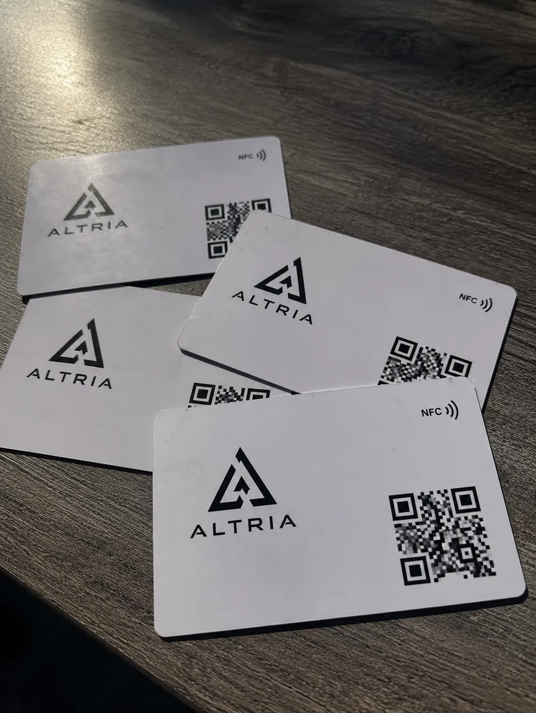
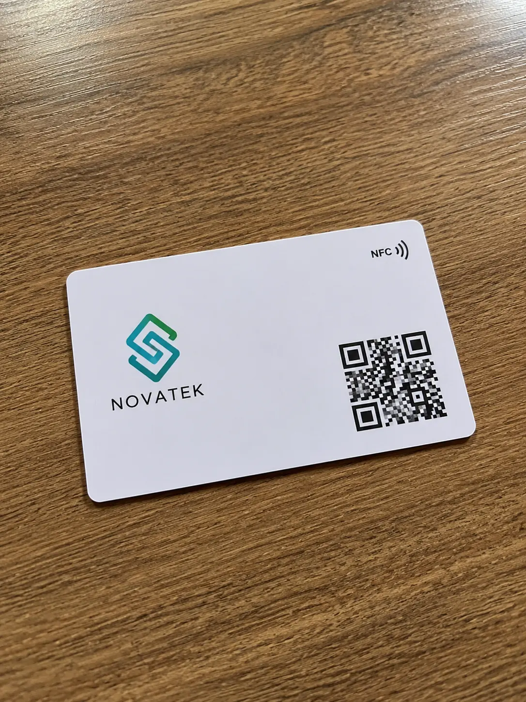

★★★★★
★★★★★
“Trabajo en inmobiliaria y me funcionó desde la primera semana. Acerco la tarjeta y el cliente ya tiene WhatsApp, ubicación y mi contacto guardado.”
Alejandra Ruiz Asesora inmobiliaria · GuadalajaraCasos de uso
Cada experiencia muestra una forma distinta de aprovechar el perfil digital: seguimiento comercial, networking, atención a clientes, portafolio, agenda, ubicación o catálogo.
★★★★★
“Trabajo en inmobiliaria y me funcionó desde la primera semana. Acerco la tarjeta y el cliente ya tiene WhatsApp, ubicación y mi contacto guardado.”
Alejandra Ruiz Asesora inmobiliaria · Guadalajara
★★★★★“Llevamos más de dos años con estas tarjetas en el equipo comercial. Si cambia un número, editamos el perfil y listo.”
Rodrigo Beltrán Director comercial · Monterrey
★★★★★“Mis pacientes abren ubicación, Instagram y agenda sin estar buscando enlaces. Se ve mucho más profesional.”
Fernanda Soto Dermatóloga · Ciudad de México ★★★★★
★★★★★
“En cada presentación alguien pregunta por la tarjeta. Ese momento ayuda a que la marca se recuerde.”
Iván Castañeda Agencia creativa · Monterrey ★★★★★
★★★★★
“En expos me ahorro muchísimo tiempo. En un toque ya tienen mi portafolio y formas de contacto.”
Karen Medina Wedding planner · Puebla ★★★★★
★★★★★
“Me gustó que no depende de una app. Para mi servicio, donde la confianza cuenta, se nota la diferencia.”
Luis Herrera Consultor fiscal · Querétaro ★★★★★
★★★★★
“La uso en reuniones y ferias de talento. Comparto mi perfil, LinkedIn y agenda sin explicar nada.”
Daniela Ponce Headhunter · Tijuana ★★★★★
★★★★★
“En ventas automotrices todo pasa rápido. TapLoop me sirve para dejar datos, catálogo y WhatsApp al instante.”
Jorge Salinas Ventas automotrices · LeónBeneficios mencionados por clientes
TapLoop concentra información profesional en un perfil digital que puede abrirse por NFC o código QR.
Facilita que clientes y prospectos guarden teléfono, correo y datos profesionales desde el celular.
Permite abrir una conversación, enviar una propuesta o continuar el seguimiento sin buscar números o enlaces.
Reúne redes sociales, sitio web, ubicación, portafolio, catálogo y botones de contacto en un solo lugar.
Dudas frecuentes
Información útil antes de solicitar una tarjeta de presentación digital o una solución para tu equipo.
La utilizan para compartir contacto, WhatsApp, redes sociales, sitio web, ubicación, catálogo, portafolio y otros enlaces desde un perfil digital personalizado.
No. El perfil digital puede abrirse desde el navegador mediante NFC o código QR, sin instalar una aplicación.
Sí. TapLoop puede mantener una misma identidad visual y personalizar los datos y el perfil digital de cada colaborador.

Cuéntanos qué tarjeta necesitas y te ayudamos a crear una presentación digital profesional para ti o para todo tu equipo.